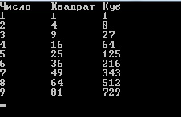

Всем доброго времени суток. На связи Алексей Гулынин. В данной статье я хотел бы рассказать о форматировании вывода в C#. При создании консольных приложений мы часто пользуемся статическим методом WriteLine() из класса Console. Напишем простой пример, который выводит информацию о человеке (имя, фамилия, возраст). Самый простой вариант вывода данной строки выглядит следующим образом:
|
2 3 4 |
string name = "Ivan"; string surname = "Ivanov"; int age = 26; Console.WriteLine("Имя: " + name + " | Фамилия: " + surname + " | Возраст: " +age.ToString()); |
Выводить в таком виде строки бывает неудобно. Существует перегруженная форма метода WriteLine():
|
Console.WriteLine("Имя: {0, 10} | Фамилия: {1, 5} | Возраст: {2}", name, surname, age.ToString()); |
В данной форме аргументы разделяются запятой, а не знаком конкатенации строк "+". Вся форматирующая строка состоит символов, которые будут выводиться на экран в неизменном виде и спецификаторов формата, которые указываются в фигурных скобках. На их место будут подставляться аргументы, которые идут через запятую.
Также при выводе можно указывать ширину полей, при этом неиспользуемые части полей будут заполнены пробелами:
|
Console.WriteLine("Имя: {0, 10} | Фамилия: {1, 15} | Возраст: {2}", name, surname, age.ToString()); |
Также форматировать вывод можно с помощью спецификатора "\t". Приведу классический пример таблицы результатов возведения числе в квадрат и куб:
|
2 3 4 5 |
Console.WriteLine("Число\tКвадрат\tКуб"); for (int i = 1; i < 10; i++) { Console.WriteLine("{0}\t{1}\t{2}", i, Math.Pow(i,2), Math.Pow(i, 3)); } |
Результат вывода:

Наиболее распространенная задача: это ограничить количество символов после запятой у десятичных типов. В данном случае это можно сделать следующим образом:
|
2 3 4 |
// Неотформатированный вид Console.WriteLine("10 / 3 = {0}", 10.0 / 3.0); // Отформатированный вид Console.WriteLine("10 / 3 = {0:#.###}", 10.0 / 3.0); |
В данном случае будет выведено всего 3 знака после запятой. Символ "#" обозначает разряды чисел. Шаблон "{#.##}" указывает методу WriteLine(), что необходимо отобразить два десятичных разряда в дробной части выводимого значения.